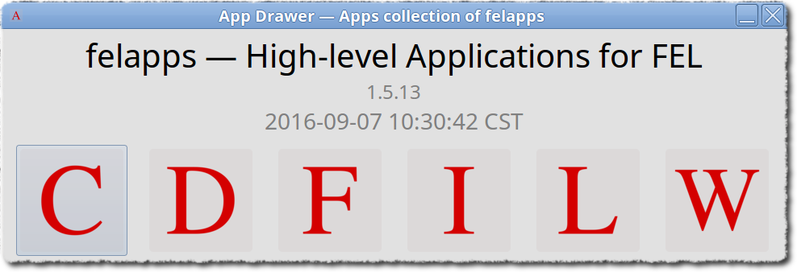

Examples and Demonstrations¶
Here goes through the main features that felapps provides,
among which latticeviewer is an app based on beamline package.
Warning
The operating system is Linux (64 bit), distributions that have been tested: Scientific Linux 6.4, CentOS 6.4, Linux Mint 17.x, 18 (Ubuntu 15.x, 16.x), other distros should work provided proper configurations. Part of features should work in Windows OS, but not has been fully tested.
In the following examples, the invocation of the apps could be one of these approaches:

Type <app name> in the terminal;
Browse <app name> from
FELAppssystem menu;Invoke
runfelappsorappdrawer, click <app name> from the app’s panel (see the following image).Run
<app>in the python terminal:<app>could be one ofimageviewer,cornalyzer,dataworkshop,felformula,wxmpvFor instance:
import felapps felapps.imageviewer.run()or
python -c "import felapps;felapps.imageviewer.run()"
{kind=link}
- Example 1: ‘imageviewer’ — Fetch image figure and data
- Example 2: ‘dataworkshop’ — Post-processing about the figure data
- Example 3: ‘cornalyzer’ — Parameters correlation analysis
- Example 4: ‘felformula’ — FEL physics calculator
- Example 5: ‘latticeviewer’ — Online-model GUI app
- Example 6: ‘wxmpv’ — General matplot viewer